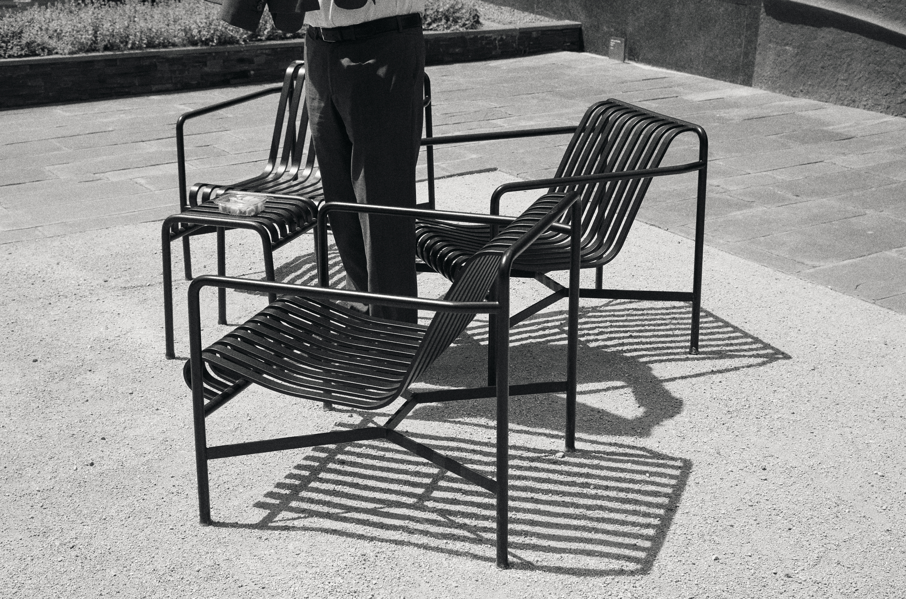
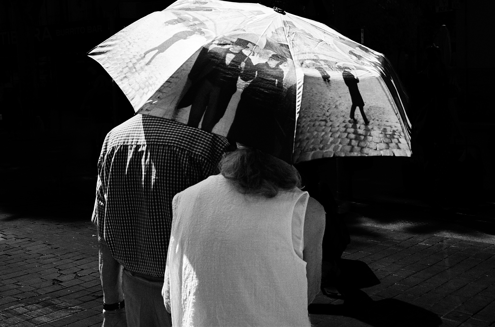
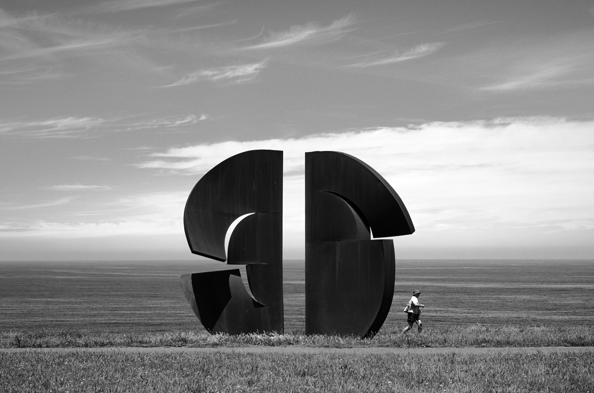
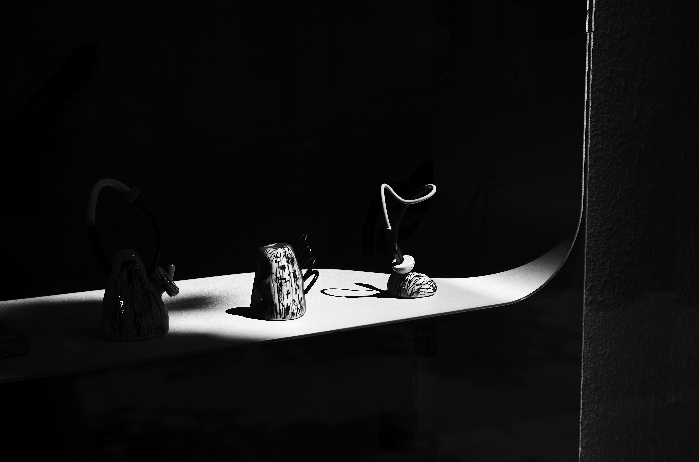

フォトグラファー — ポートレート / ライフスタイル / エディトリアル Photographer — Portrait / Lifestyle / Editorial
Naoki Nishizawa
Naoki NishizawaPhotographer
光と陰影のあいだにある、その人だけの表情を探している。
Between light and shadow, I search for the expression only that person holds.
ヨーロッパと日本を拠点に活動する写真家。
日常の中にある静かな瞬間——光、色、人々、そして街を歩く中で偶然出会う風景を撮影しています。
特別な出来事だけではなく、何気ない日常にふと現れる美しさや、人とその周囲の環境との間に生まれる一瞬の関係に惹かれています。
街を歩きながら、光や色、誰かの仕草、偶然重なった人と風景の関係を観察し、その瞬間にしか存在しない空気を写真として残しています。
人物を撮るときも、その人自身だけでなく、いる場所や光、周囲の空気までを一つの風景として捉えたいと考えています。
写真を通して、見過ごしてしまいそうな日常の一瞬に目を向け、一枚の写真の中に、見る人が想像できる余白を残す。
日常の中にある、まだ名前のない一瞬を探しています。
A photographer based between Europe and Japan.
I photograph quiet moments found in everyday life — light, color, people, and the scenery I happen to encounter while walking through the city.
Rather than extraordinary events, I'm drawn to the beauty that quietly surfaces in ordinary life, and the fleeting relationships that form between people and the environment around them.
As I walk through the streets, I observe light, color, a person's gesture, the chance overlap between someone and their surroundings — capturing an atmosphere that exists only in that single moment.
Even when photographing a person, I try to capture not just them, but the place they're in, the light, and the surrounding air as a single landscape.
Through photography, I turn my attention to the moments of daily life that might otherwise go unnoticed, leaving space within each image for the viewer's own imagination.
I'm always searching for those unnamed moments hidden within the everyday.
作品集Selected Works
Works
まだ作品がありません。works/monochrome または works/color フォルダに写真を追加してください。 No works yet. Add photos to the works/monochrome or works/color folder.
Contact
Contact
撮影のご依頼やお問い合わせは、下記フォームまたはSNSのDMよりお気軽にご連絡ください。通常2〜3営業日以内にご返信いたします。
For shoot inquiries or general questions, please feel free to reach out via the form below or through a DM on social media. I usually reply within 2–3 business days.